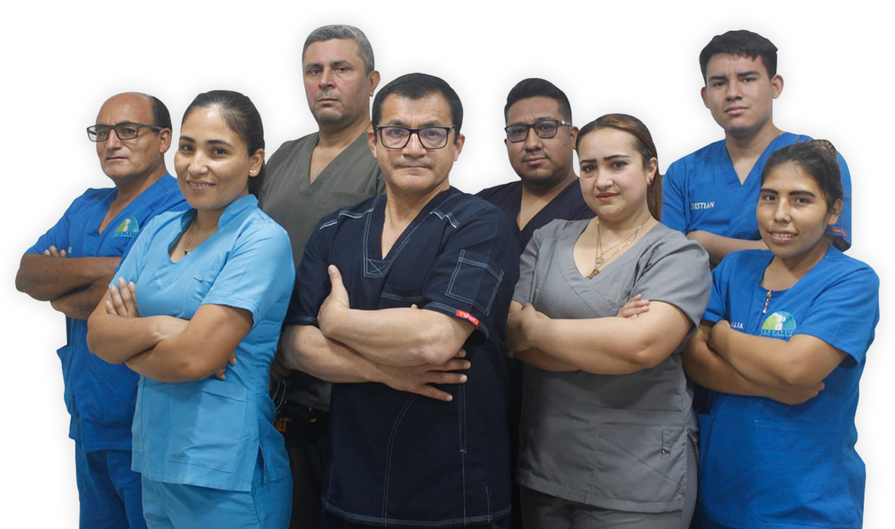

Historia
La empresa se conformó en 2018, comenzaron prestando servicios médicos para las Clínicas Maison de Santé. En el año 2021 se conforma como centro médico a precios al alcance del paciente.
Misión
Junto a los mejores profesionales permitimos que más peruanos cuiden de su salud y bienestar.
Visión
Ser una clínica especializada en el cuidado y prevención de la salud; brindándole a las personas su bienestar como un derecho.
